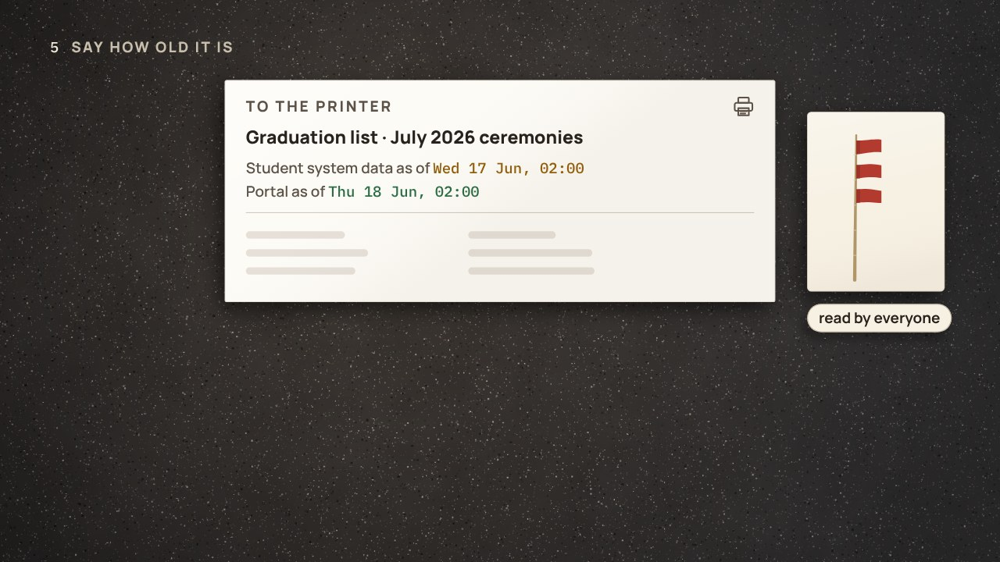

← Anterior · Película 2 de 4
Cien registros
La lista pasaba todos los controles. Cien registros revisados a mano dijeron qué tan buena era; un perfil completo, dónde mirar.
Temas › Calidad de datos › Apto para su uso
En febrero de 2026, cada nombre de la lista de graduación de marzo pasó los controles que dicen si está permitido. En el portal, los graduados corrigieron 88, y un control contra las listas aprobadas por las juntas examinadoras halló dos títulos faltantes. Solo una referencia dice qué es cierto.
Borrador · El autor aún no lo ha revisado, así que algunos detalles pueden cambiar.
Pausa para pensar está activada: la película se detiene con una pregunta al final de los capítulos.

Descargar el video (en inglés)Archivos de subtítulosLeer el guion (en inglés)
¿Y ahora?
Cada tarjeta de la película muestra un archivo real del proyecto de dbt de ejemplo. Abre en GitHub los que muestra cada capítulo, o ejecuta tú el proyecto entero. Cómo se construyó, paso a paso, lo cuenta En las entrañas del oficio de datos.
sources/portal/_portal__sources.ymlsources/exam_boards/_exam_boards__sources.yml tests/generic/reconciles_with.sqltests/rules/names_are_allowed.sql models/marts/graduations/_graduations__models.yml docs/scorecard.mdLas cuatro preguntas de Pausa para pensar, para una clase o un equipo. Abre una para ver la respuesta.
Las normas y la documentación detrás de las palabras y los controles de la película.
Película 3 de 4.
← Anterior · Película 2 de 4
La lista pasaba todos los controles. Cien registros revisados a mano dijeron qué tan buena era; un perfil completo, dónde mirar.

Siguiente · Película 4 de 4 →
El archivo de la noche no llegó, todo pasó, y faltaban 23 graduados. Acuerda cuán frescos, y di su antigüedad.